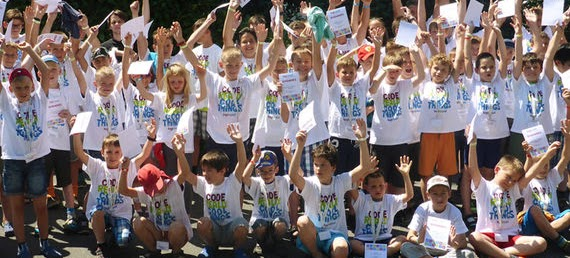

DE CE ESTE PROGRAMAREA ATÂT DE IMPORTANTĂ?
Copiii folosesc în mod firesc calculatorul, tableta sau telefoanele inteligente.
Există însă posibilitatea ca ei să le folosească într-un mod care va avea un impact pozitiv asupra vieții lor, mai
departe.
.png)
Alfabetizarea digitală
Alfabetizarea digitală devine una dintre abilitățile de bază ale secolului 21;
elevii noștri nu sunt doar utilizatori pasivi ai tehnologiei, ci sunt cei care o vor transforma mai departe.
.png)
Creativitate
Elevii noștri învață să programeze în timp ce se joacă, prin metoda noastră
de predare bazată pe experimentarea proprie.
Învățându-i să programeze jocuri, noi creăm defapt spațiu pentru creativitatea lor,
lăsându-i să experimenteze și să creeze ceea ce le place cu adevărat.
Cool
Cu noi învață să creeze singuri jocuri pe calculator, animații, aplicații cool și să programeze roboți.
.png)
.png)
Cariere
Chiar dacă nu toți elevii vor alege să devină programatori profesioniști în viitor,
vor putea să se folosească de cunoștințele dobândite aici în aproape orice carieră vor alege mai departe.
CURSURI ȘI TABERE DE PROGRAMARE
Cursuri simestriale
Avem un număr de școli în creștere în toată Europa și începând de acum și în Moldova, școli în care copiii pot învăța programare și discipline adiacente,
în cursuri de câte 90 de minute, o dată pe săptămână,
într-un mediu care să îi inspire, disponibile online și la sediul școlilor.
Copiii sunt încurajați și sprijiniți de instructorii noștri tineri, curriculum-ul nostru adaptat pe categorii de vârstă și
platforma noastră educațională proprie care este la standarde internaționale și pe care o dezvoltăm încontinuu.

Tabere / Ateliere
Organizăm o multitudine de module foarte apreciate, pe mai multe teme, disponibile online și la sediile școlilor.
Copiii pot intra cu totul în lumea dezvoltării de jocuri și aplicații, editarea de pagini web, editarea foto-video sau Minecraft.
Intrebari frecvente
Ce fel de cunoștințe învață copiii la Cadi School?
Elevii noștri învață gândirea algoritmică, care este o abilitate foarte importantă pentru mai târziu, indiferent de ...
Când încep și când se termină cursurile?
În anul școlar 2020 - 2021 cursurile noastre încep în mod obișnuit pe 14 septembie, dar te rugăm să ai în vedere...
Când se țin cursurile?
Cursurile au loc în sesiuni de 90 de minute, săptămânal pe perioada cursului. Frecvența, zilele și intervalele orare se pot selecta în formularele de înregistrare....
Cum pot pune o intrebare proprie?
Intra pe adresa paginii FAQ si completeaza formularul de acolo.